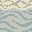
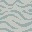
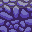
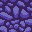
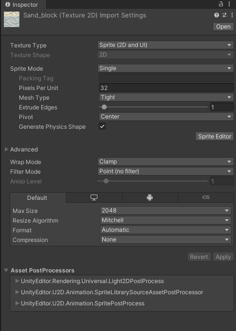
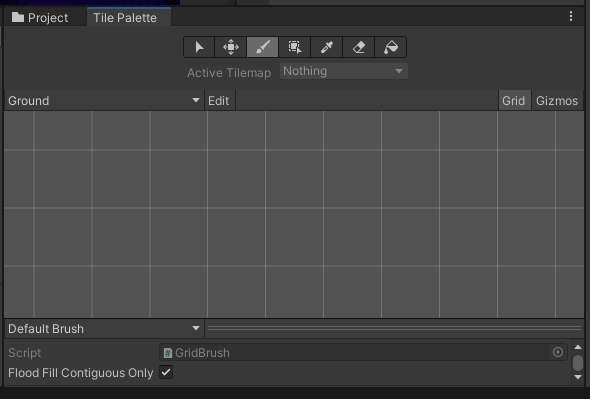
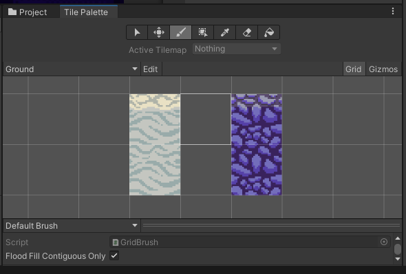
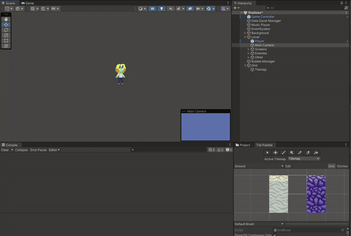

Tilemaps fornecem uma forma muito mais símples de criar mapas para jogos, permite que os “bloquinhos” que compõe os níveis sejam agrupados por suas propriedades, ao invés de cada um ser um GameObject próprio, também permitindo que sejam posicionados de maneira mais precisa em uma grade.
Para começar a usar tilemaps, primeiro precisamos de alguns sprites. Adicione os sprites que quiser ao seu projeto ou utilize esses:




Importe as imagens ao seu projeto no Unity, e configure o campo pixel per unit (quantos pixeis do bloco encaixam em uma unidade de comprimento da engine Unity, geralmente igual ao comprimento do lado da imagem):

*Note que como os sprites do Coral Quest são pixel art, trocamos o filter mode para “point” e a compressão para “none”, você não precisa fazer isso com imagens maiores
Em seguida, no projeto, crie uma Tile Palette com Create > 2D > Tile Palette > Rectangular, não é necessário mudar as opções padrões.
Em Window > 2D > Tile Palette, abra a janela de tile palette

Para criar suas tiles, arraste as imagens à tile palette, posicionando elas onde desejar.

Na hierarquia, crie um tilemap em 2D Object > Tilemap > Rectangular
Selecione o tilemap criado na palette, agora você ja pode desenhar seus níveis!

Alguns controles úteis:
ps.: Para adicionar colisão ao seu tilemap, adicione o componente Tilemap Collider 2D.